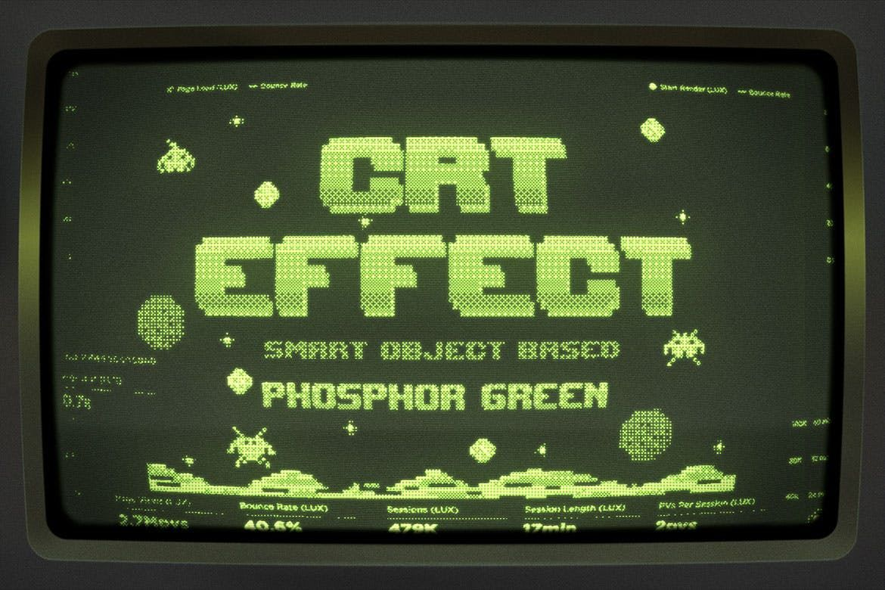

Раздел 05 — Отзыв
Отзыв слушателя
▒▒▒▒▒▒▒▒▒▒▒▒▒▒▒▒▒▒▒▒▒▒▒▒▒▒▒▒▒▒▒▒▒▒▒▒▒▒▒▒▒▒▒▒▒▒▒▒▒▒▒▒▒▒▒▒▒▒▒▒▒▒▒▒▒▒▒▒▒▒▒▒▒▒▒▒▒▒▒▒▒▒▒▒▒▒▒▒▒▒▒▒▒▒▒▒▒▒▒▒▒▒▒▒▒▒▒▒▒
Я пришёл из отдела численных расчётов. Писал на Fortran, считал траектории. Однажды попробовал записать рассуждение в виде списка — и не смог вернуться обратно. Теперь я строю систему, которая помогает инженерам ставить диагноз оборудованию. Lisp оказался не просто языком, а способом думать.
И. Соколов, инженер-исследователь.
Так выглядит типичный путь в Lisp: от численных задач к символьным и экспертным системам. В 1960-е и 1970-е годы Lisp был основным языком в лабораториях искусственного интеллекта MIT, Stanford и Carnegie Mellon. Курс адресован программистам, знакомым с Fortran или Algol, математикам и логикам, инженерам, работающим над системами ИИ, и тем, кто хочет попасть в исследовательскую лабораторию.
Рис. 4 — Рабочее место
